Seminaire DISC:
Neuroevolution
Dennis Wilson
2019-11-21
Outline
- Me
- Open Source
- Neuroevolution
- Why evolution?
- Why neurons?
- Neuromodulation
- Developmental Neural Networks
Background

Research Interests

Open source


Research Interests
Neuroevolution

Gruau, Frederic, and Darrell Whitley. "Adding learning to the cellular development of neural networks: Evolution and the Baldwin effect." Evolutionary computation 1.3 (1993): 213-233. |

Fleischer, Kurt, and Alan H. Barr. "A simulation testbed for the study of multicellular development: The multiple mechanisms of morphogenesis." 1994 |
Neuroevolution

Stanley, Kenneth O., and Risto Miikkulainen. "Evolving neural networks through augmenting topologies." Evolutionary computation 10.2 (2002): 99-127 |

Miller, Julian F., Dennis G. Wilson, and Sylvain Cussat-Blanc. "Evolving Developmental Programs That Build Neural Networks for Solving Multiple Problems." Genetic Programming Theory and Practice XVI. Springer, Cham, 2019. 137-178. |
Deep Neuroevolution


Neuroevolution
- Direct evolution of neural network weights
Evolutionary Strategies - Direct evolution of neural network weights and structure
NEAT, CGPANN - Indirect evolution of neural network weights
HyperNEAT, Deep Neuroevolution - Evolution of learning in neural networks
Cellular Encoding, Developmental Neural Networks, Deep Neuromodulation
Evolutionary Computation
Evolutionary Algorithms
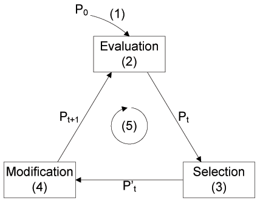$1+\lambda$ ES, CMA-ES, Genetic Algorithm
Evolution for optimization
https://eng.uber.com/deep-neuroevolution/
Search for novel behavior
Cully, Antoine, et al. "Robots that can adapt like animals." Nature 521.7553 (2015): 503.
Cartesian Genetic Programming

Wilson, Dennis G., et al. "Evolving simple programs for playing Atari games."
Proceedings of the Genetic and Evolutionary Computation Conference. ACM, 2018.
Cartesian Genetic Programming

Wilson, Dennis G., et al. "Positional Cartesian Genetic Programming." arXiv preprint arXiv:1810.04119 (2018).
CGP for Atari playing

Comparison
| Game | Human | Double | DQN | Prioritized | A3C:FF | HyperNEAT | CGP |
|---|---|---|---|---|---|---|---|
| Asteroids | 13157 | 1193.2 | 2035.4 | 1654 | 4474.5 | 1694 | 9412 |
| Defender | 27510 | 33996 | 21093.5 | 56533 | 14620 | 993010 | |
| Gravitar | 2672 | 200.5 | 297 | 218 | 303.5 | 370 | 2350 |
| JamesBond | 406.7 | 573 | 835.5 | 3511.5 | 541 | 5660 | 6130 |
| Kangaroo | 3035 | 11204 | 10334 | 10241 | 94 | 800 | 1400 |
| Krull | 2395 | 6796.1 | 8051.6 | 7406.5 | 5560 | 12601.4 | 9086.8 |
| Ms. Pacman | 15693 | 1241.3 | 2250.6 | 1824.6 | 653.7 | 3408 | 2568 |
| Private Eye | 69571 | -575.5 | 292.6 | 179 | 206.9 | 10747.4 | 12702.2 |
| Skiing | -11490.4 | -11928 | -10852.8 | -10911.1 | -7983.6 | -9011 | |
| Solaris | 810 | 1768.4 | 2238.2 | 1956 | 160 | 8324 | |
| YarsRevenge | 6270.6 | 25976.5 | 5965.1 | 7157.5 | 24096.4 | 28838.2 |
My work in evolutionary computation
- Population dynamics in evolutionary search
Island model $1+\lambda$ ES, CMA-ES - Genome representation and evolutionary operators for Genetic Programming
Gene Regulatory Networks, Positional CGP - Application of Genetic Programming
Wind farm layouts, electric crisis response, Atari games, learning in ANNs
The Brain as Inspiration
Why neurons?
|
Why do humans have neurons?
Pollan, Michael. "The intelligent plant." New Yorker (2013): 93.
Adaptive immunity
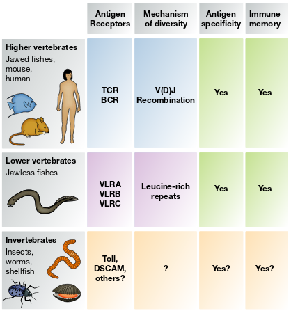Sun, Joseph C., Sophie Ugolini, and Eric Vivier. "Immunological memory within the innate immune system." The EMBO journal 33.12 (2014): 1295-1303.
The brain
- Memory, cognition, meta-cognition, abstraction, imagination, planning, adaptation
- Energy efficient
human brain: 2,000 kJ, deep NLP: 1,650,000 kJ - Sample efficient
- Highly plastic
Neurons are the best form of phenotypic plasticity that biological evolution has found to date, enabling adaptation to unknown scenarios during a lifetime.
Strucural Plasticity
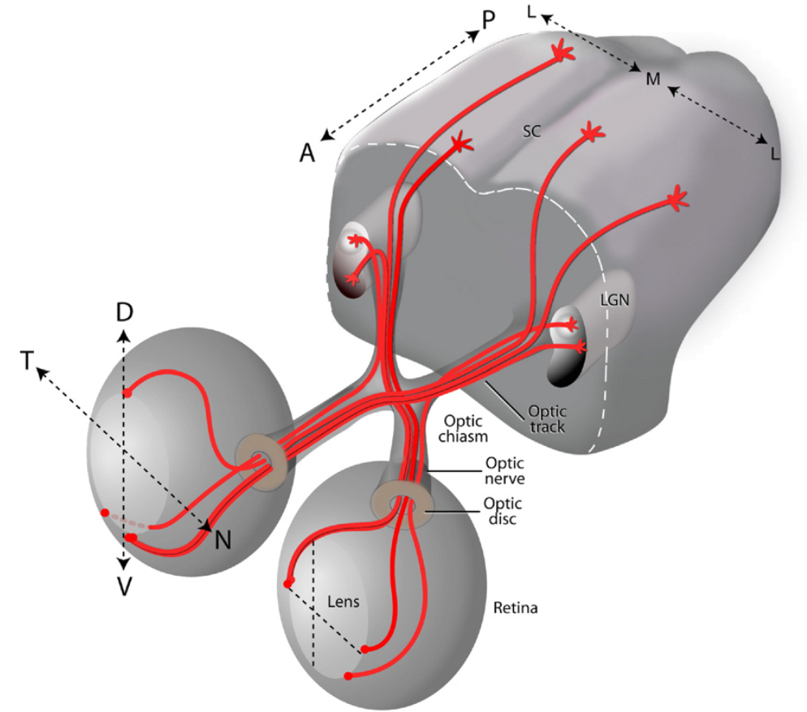
Erskine, L., & Herrera, E. (2007). The retinal ganglion cell axon's
journey: insights into
molecular mechanisms of axon guidance.
Developmental biology, 308(1), 1-14.
AGRN Axon guidance

Visual Input Disruption


Wilson, D et al. A gene regulatory network model for axon guidance.
Workshop on Developmental Neural Networks, PPSN 2018.
Evolving Learning Methods
© DigiCortex
Stochastic Gradient Descent

SGD($\eta$, $\alpha$)
Adaptive Moment Estimation (Adam)

Adam($\eta$, $\beta_1$, $\beta_2$, $\epsilon$)
Learning Parameters
| Inputs | Output (SGD) | Output (Adam) |
| $\mu_{\theta}$ | $\eta$ | $\eta$ |
| $\sigma_{\theta}$ | $\alpha$ | $\beta_1$ |
| $\mu_{\nabla Q}$ | $\beta_2$ | |
| $\sigma_{\nabla Q}$ | $\epsilon$ | |
| layer location | ||
| layer size |
Neuromodulation
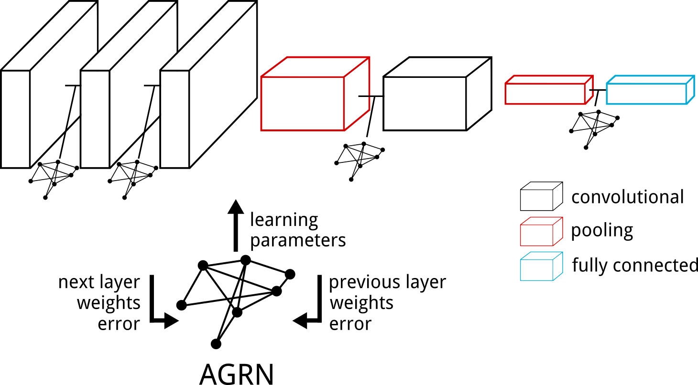
Wilson, Dennis G., et al. "Neuromodulated Learning in Deep Neural Networks."
arXiv preprint arXiv:1812.03365 (2018).
Neural Network Models

Simonyan, Karen, and Andrew Zisserman. "Very deep convolutional networks for large-scale image recognition." ICLR (2015).
| m0 | small |
| m1 | medium |
| m2 | large |
Image classification: CIFAR-10
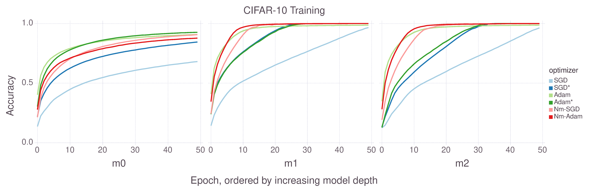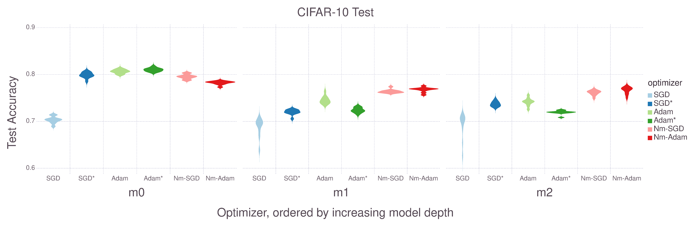
Image classification: CIFAR-100
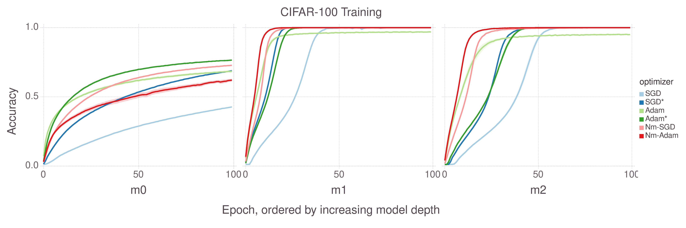

AGRN Outputs
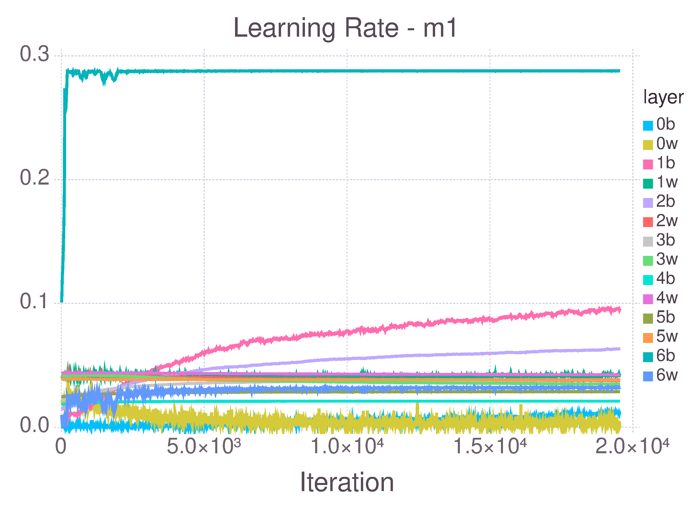 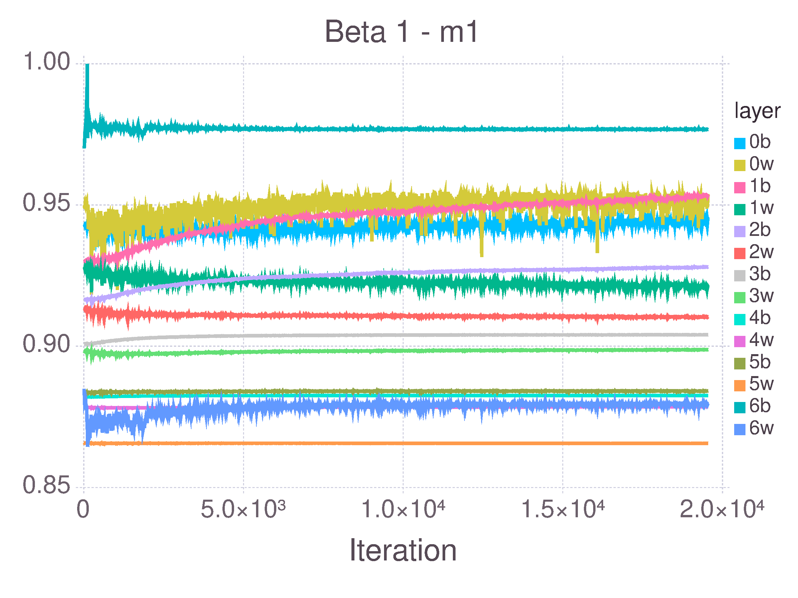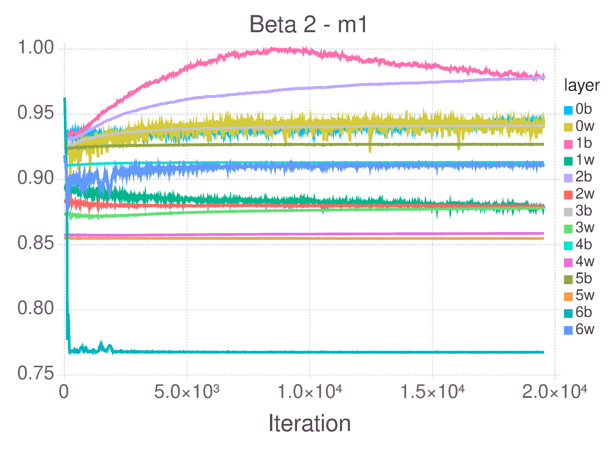 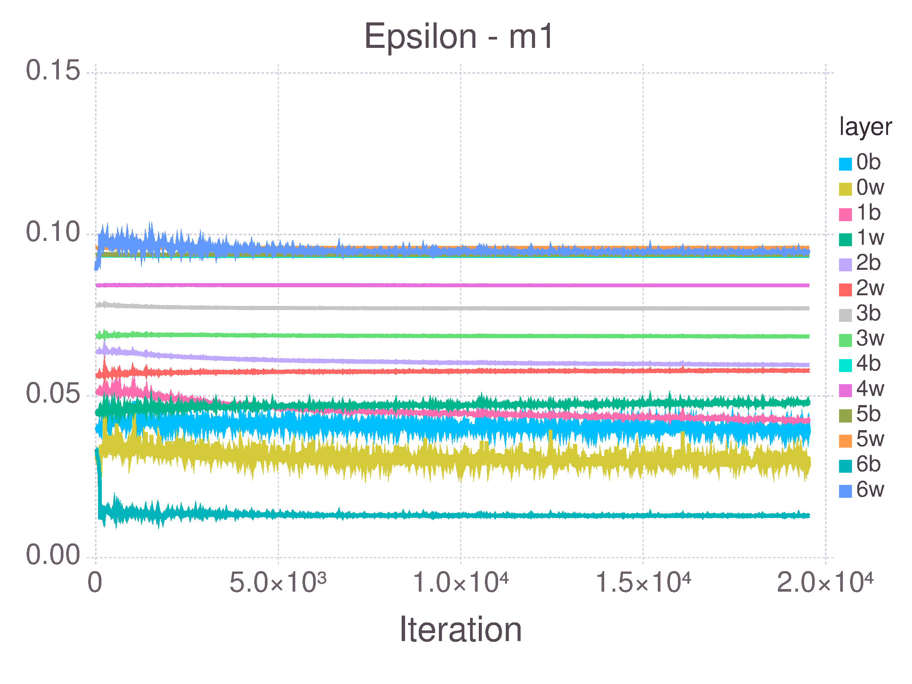
Evolving Neural Connectivity
© Alvéole
CGP brain

Miller, Julian F., Dennis G. Wilson, and Sylvain Cussat-Blanc. "Evolving developmental programs that build neural networks for solving multiple problems." Genetic Programming Theory and Practice XVI. Springer, Cham, 2019. 137-178.
Neuron Development

Data classification


Reinforcement learning


Lifelong learning

Parisi, German I., et al. "Continual lifelong learning with neural
networks: A review." Neural Networks (2019).
Neurogenesis

Alunni, A. and Bally-Cuif, L. A comparative view of regenerative
neurogenesis in vertebrates. Development, 143(5):741–753. (2016).